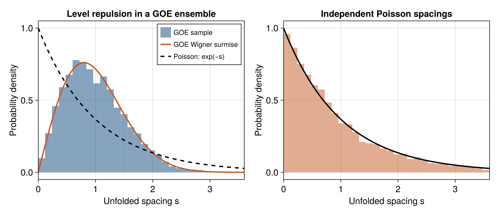

3 Random matrices and the fingerprints of quantum chaos
A many-body Hamiltonian is highly structured: interactions are local, charges are conserved, and its entries are not independent random numbers. Random-matrix theory is useful because some fluctuations can forget that detailed structure. The aim is to identify which fluctuations are universal, after choosing the correct energy window and symmetry sector.
3.1 The three Gaussian ensembles
A Hermitian matrix can be diagonalized as \(H=UEU^\dagger\). Gaussian invariant ensembles assign a probability density of the form \(P(H)\propto e^{-c\operatorname{Tr}H^2}\), with \(c\) setting the energy scale. Invariance under basis rotations makes eigenvector orientations uniform and independent of the eigenvalues. The relevant rotation group depends on antiunitary symmetry:
| Ensemble | Effective antiunitary structure in the sector | Dyson index \(\beta_{\mathrm D}\) |
|---|---|---|
| Gaussian orthogonal (GOE) | An antiunitary symmetry with square \(+1\) permits a real basis | 1 |
| Gaussian unitary (GUE) | No antiunitary symmetry acting within the sector | 2 |
| Gaussian symplectic (GSE) | An antiunitary symmetry squares to \(-1\); count Kramers pairs once | 4 |
The Dyson index is unrelated to inverse temperature. A physical time-reversal operator can exchange symmetry sectors instead of acting within one. Classification must therefore be done after the Hamiltonian is decomposed into irreducible symmetry blocks. Merely inspecting whether some terms look complex in a chosen basis is insufficient.
Changing variables from matrix entries to eigenvalues and eigenvectors produces a Jacobian:
\[ P(E_1,\ldots,E_D)\propto \exp\left[-c\sum_nE_n^2\right] \prod_{m<n}|E_m-E_n|^{\beta_{\mathrm D}}. \tag{3.1}\]
To see the origin of the product, make an infinitesimal change of eigenbasis, with \(\dd K=U^\dagger\dd U\). In that basis, \(U^\dagger\dd H U=\dd E+[\dd K,E]\), so an off-diagonal variation has magnitude \(|E_m-E_n|\,|\dd K_{mn}|\). Each pair has one independent real component for GOE, two for GUE, and four for GSE after accounting for Kramers structure. The change of volume element therefore contributes one, two, or four powers of the gap for each pair. Invariance makes the remaining angular measure independent of \(E\).
The product suppresses nearby eigenvalues. It can also be read as a logarithmically repelling gas confined by a quadratic potential. This effective gas is a probability model of spectra, not a claim that energy levels exert physical forces.
3.2 Level repulsion from a two-dimensional calculation
Consider a real symmetric \(2\times2\) matrix,
\[ H=\begin{pmatrix}a&b\\b&c\end{pmatrix},\qquad E_+-E_-=2\sqrt{[(a-c)/2]^2+b^2}. \tag{3.2}\]
GOE variances make \(x=(a-c)/2\) and \(y=b\) identically distributed independent Gaussians. In polar coordinates, the area element is \(r\,\mathrm dr\,\mathrm d\phi\). Consequently the gap density is proportional to the gap near zero. After normalizing the mean gap to one, the result is the Wigner surmise,
\[ P_{\mathrm{GOE}}(s)=\frac\pi2s\,e^{-\pi s^2/4},\qquad P_{\mathrm{GUE}}(s)=\frac{32}{\pi^2}s^2e^{-4s^2/\pi}. \tag{3.3}\]
The GUE has three independent components controlling the gap, giving a volume element proportional to \(r^2\mathrm dr\). GSE has repulsion \(P(s)\propto s^4\) at small spacing. The two-level formulas approximate large-matrix nearest-neighbor statistics very accurately but are not the exact large-\(D\) spacing laws.
For independent unfolded levels, the probability that an interval of length \(s\) contains no level is \(e^{-s}\). Differentiating gives \(P_{\mathrm P}(s)=e^{-s}\). Unlike GOE or GUE statistics, this Poisson process permits arbitrarily small spacings with finite probability density.

3.3 Unfolding and symmetry resolution
A spectrum generally has an energy-dependent mean density \(\bar\rho(E)\). Define the smooth integrated counting function \(\bar N(E)=\int^E\bar\rho(E')\,\mathrm dE'\) and unfolded levels \(x_n=\bar N(E_n)\). Their mean spacing is approximately one. Using raw spacings across a broad band confuses the smooth density of states with fluctuations. Conversely, fitting the staircase too closely can remove the correlations one wants to measure.
Adjacent-gap ratios reduce this sensitivity:
\[ \delta_n=E_{n+1}-E_n,\qquad r_n=\frac{\min(\delta_n,\delta_{n+1})} {\max(\delta_n,\delta_{n+1})}\in[0,1]. \tag{3.4}\]
A slowly varying local density cancels between adjacent gaps. For independent exponential gaps the density is \(P(r)=2/(1+r)^2\), giving \(\langle r\rangle=2\ln2-1\). GOE spectra instead have a larger mean, close to \(0.53\). [1] developed accurate random-matrix ratio distributions. Ratios still require symmetry resolution and an energy window: a sharp change of density over a few gaps can spoil the cancellation.
Independent symmetry sectors can cross without repulsion. Combining them produces excess small spacings even when each sector separately has GOE statistics. A correct numerical workflow first fixes particle number, momentum when translation applies, parity where compatible, and any additional exact charge. At special momenta, extra spatial symmetries often survive.
A further distinction is between the mean density and fluctuations around it. With entries normalized so that off-diagonal variance is \(v^2/D\), the large-\(D\) Gaussian ensembles have the semicircle density
\[ \bar\rho(E)=\frac{D}{2\pi v^2}\sqrt{4v^2-E^2},\qquad |E|<2v. \tag{3.5}\]
Its integral is \(D\), so it counts levels rather than probabilities. Many physical local Hamiltonians instead have an approximately Gaussian bulk density, reflecting sums of numerous local energy contributions. Agreement with GOE fluctuations does not require a semicircular physical density: unfolding removes that smooth profile. The figure uses semicircle unfolding because its matrices are themselves sampled from GOE. A physical-chain calculation requires a suitable smooth density for that chain.
3.4 Eigenvectors and matrix elements
For a uniformly distributed real unit vector with components \(u_i\),
\[ \mathbb E u_i^2=\frac1D,\qquad \mathbb E u_i^4=\frac{3}{D(D+2)}. \tag{3.6}\]
Thus a single component is approximately Gaussian with variance \(1/D\) for large \(D\). The scaled intensity \(x=Du_i^2\) has the Porter–Thomas density \(P(x)=e^{-x/2}/\sqrt{2\pi x}\). Complex Haar vectors instead have exponentially distributed scaled intensities in the large-\(D\) limit. Orthogonality and normalization correlate components; treating them as independent Gaussians is an approximation justified only for suitable low-order questions at large dimension.
Let \(A\) be a fixed real symmetric observable and remove its identity part, \(A_c=A-(\operatorname{Tr}A/D)I\). Orthogonal invariance gives
\[ \mathbb E A_{nn}=\frac{\operatorname{Tr}A}{D},\qquad \operatorname{Var}(A_{nn})= \frac{2\operatorname{Tr}A_c^2}{D(D+2)}. \tag{3.7}\]
The typical off-diagonal variance is asymptotically half this value. For a bounded local observable, \(\operatorname{Tr}A_c^2\) is normally proportional to \(D\), so fluctuations scale as \(D^{-1/2}\) in amplitude. When \(D\) grows exponentially with system size, individual fluctuations are exponentially small. The trace part contributes equally to all diagonal elements and nothing off diagonal.
This calculation provides a seed for ETH, but a full random matrix loses the energy dependence of physical observables. It has no spatial geometry, propagation speed, transport law, or meaningful low-energy quasiparticles. A physical many-body observable typically has a frequency-dependent band profile in the energy basis, which the ETH ansatz restores.
3.5 From classical dynamics to wavefunctions
The Berry–Tabor proposal associates generic regular semiclassical systems with Poisson spectra, subject to nondegeneracy and genericity assumptions [2]. The Bohigas–Giannoni–Schmit proposal associates sufficiently chaotic semiclassical systems with the appropriate random-matrix correlations [3]. Neither says that a harmonic oscillator is Poisson or that every chaotic spectrum is GOE: exact degeneracies, arithmetic structure, and antiunitary symmetries matter.
Berry’s random-wave picture provides a complementary eigenfunction hypothesis [4]. For a free particle well inside a two-dimensional chaotic billiard, build a wavefunction from many plane waves of equal wave number \(k\) with random phases and isotropically distributed directions. A central-limit argument makes the local amplitude approximately Gaussian. Angular averaging gives the illustrative correlator
\[ \mathbb E[\psi^*(\mathbf r)\psi(\mathbf r')] \simeq\frac1V\int_0^{2\pi}\frac{\mathrm d\phi}{2\pi} e^{ik\hat{\mathbf n}(\phi)\cdot(\mathbf r'-\mathbf r)} =\frac1V J_0(k|\mathbf r'-\mathbf r|). \tag{3.8}\]
The energy constraint fixes the wavelength even though the phases are random. Boundary conditions, short periodic orbits, scars, and mixed dynamics produce corrections. A random wave is therefore an energy-constrained statistical model, richer than a vector whose position-space entries are all unrelated.
Agreement with a spacing distribution is numerical evidence for a universality class over the tested scales. It does not prove eigenstate thermalization for every observable, nor set a relaxation time. Eigenvectors, operator matrix elements, and dynamics must be examined separately.
3.6 Exercises and worked answers
1. Normalize the GOE surmise. Starting from \(P(s)=as e^{-bs^2}\), impose normalization and mean spacing one.
\(\int_0^\infty s e^{-bs^2}\,\mathrm ds=1/(2b)\) gives \(a=2b\). The mean condition gives \(a\sqrt\pi/(4b^{3/2})=1\), hence \(b=\pi/4\) and \(a=\pi/2\).
2. Derive the Poisson ratio law. Take independent unit-mean exponential gaps \(x,y\).
On the region \(x\le y\), use \(x=ry\), with Jacobian \(y\). The two equivalent regions give \(P(r)=2\int_0^\infty y e^{-(1+r)y}\,\mathrm dy=2/(1+r)^2\). Integrating \(rP(r)\) from zero to one yields \(2\ln2-1\).
3. An identity operator test. Why must the identity part be subtracted in Equation 3.7?
For \(A=aI\), every basis gives \(A_{nn}=a\) and \(A_{mn}=0\) for \(m\ne n\). A formula using \(\operatorname{Tr}A^2\) alone would predict fluctuations that do not exist. Subtracting \(aI\) leaves \(A_c=0\), as required.